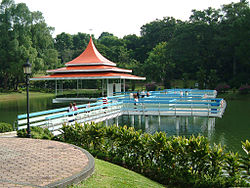

I done many things at the MacRitchie reservoir such as water testing and learning more about it, such as the history
I learnt things such as how to test the quality of water, the history of MacRitchie reservoir and also to conserve water use.
We could test the quality of water in the reservoir by looking at the different indicators of water quality which are colour, debris, smell, temperature, amount of dissolved oxygen and turbidity and pH levels.
I also learnt that MacRitchie reservoir was the oldest reservoir in Singapore and many water activities such as kayaking, fishing and canoeing are held in this reservoir.
I realised the importance of water conservation when my teacher told me that Singapore would end her contract of buying water from Malaysia in 2061 which would cause Singapore to lose one of her biggest imported water suply. More reservoirs were needed to be built by the end of 2060 to cater to the needs of Singapore. So, the more we need to conserve water.